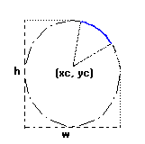
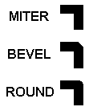

Lines
Line are segments that connects 2 or more points. The Line
function includes the 2 given points and draws the line using the foreground
color. Line thickness is controlled by the LineWidth function.
By using function LineStyle you can draw dashed lines with some
variations. Lines with a style other than continuous are affected by the back
opacity attribute and by the background color.
void cdCanvasLine(cdCanvas* canvas, int x1, int y1, int x2, int y2); [in C]
void cdfCanvasLine(cdCanvas* canvas, double x1, double y1, double x2, double y2); [in C]
void wdCanvasLine(cdCanvas* canvas, double x1, double y1, double x2, double y2); (WC) [in C]
canvas:Line(x1, y1, x2, y2: number) [in Lua]
canvas:fLine(x1, y1, x2, y2: number) [in Lua]
canvas:wLine(x1, y1, x2, y2: number) (WC) [in Lua]
Draws a line from (x1,y1) to (x2,y2) using
the current foreground color and line width and style. Both points are
included in the line.
Polygons and Bezier Lines
Open polygons can be created using cdBegin(CD_OPEN_LINES)/cdVertex(x,y)/.../cdEnd().
Closed polygons use the same number of vertices but the last point is
automatically connected to the first point. Closed polygons can be created
using cdBegin(CD_CLOSED_LINES)/cdVertex(x,y)/.../cdEnd().
Bezier lines can be created using cdBegin(CD_BEZIER)/cdVertex(x,y)/.../cdEnd().
At least 4 vertices must be defined. The two vertices of the middle are the
control vertices. A sequence of bezier lines can be defined using more 3
vertices, two control points and an end point, the last point of the previous
bezier will be used as the start point.
See the documentation of cdBegin/cdVertex/cdEnd.
void cdCanvasRect(cdCanvas* canvas, int xmin, int xmax, int ymin, int ymax); [in C]
void cdfCanvasRect(cdCanvas* canvas, double xmin, double xmax, double ymin, double ymax); [in C]
void wdCanvasRect(cdCanvas* canvas, double xmin, double xmax, double ymin, double ymax); (WC) [in C]
canvas:Rect(xmin, xmax, ymin, ymax: number) [in Lua]
canvas:fRect(xmin, xmax, ymin, ymax: number) [in Lua]
canvas:wRect(xmin, xmax, ymin, ymax: number) (WC) [in Lua]
Draws a rectangle with no filling. All points in the limits of interval
x_min<=x<=x_max, y_min<=y<=y_max
will be painted. It is affected by line attributes and the foreground color.
If the active driver does not include this primitive, it will be simulated
using the cdLine primitive.
void cdCanvasArc(cdCanvas* canvas, int xc, int yc, int w, int h, double angle1, double angle2); [in C]
void cdfCanvasArc(cdCanvas* canvas, double xc, double yc, double w, double h, double angle1, double angle2); [in C]
void wdCanvasArc(cdCanvas* canvas, double xc, double yc, double w, double h, double angle1, double angle2); (WC) [in C]
canvas:Arc(xc, yc, w, h, angle1, angle2: number) [in Lua]
canvas:fArc(xc, yc, w, h, angle1, angle2: number) [in Lua]
canvas:wArc(xc, yc, w, h, angle1, angle2: number) (WC) [in Lua]
Draws the arc of an ellipse aligned with the axis, using the current
foreground color and line width and style.
The
coordinate (xc,yc) defines the center of the ellipse.
Dimensions w and h define the elliptic axes X
and Y, respectively.
Angles angle1 and angle2 are in degrees and oriented
counter-clockwise. They define
the arc start and end, but they are not the angle relative to the
center, except when w==h and the ellipse is reduced to a circle. The arc
starts at the point (xc+(w/2)*cos(angle1), yc+(h/2)*sin(angle1))
and ends at (xc+(w/2)*cos(angle2), yc+(h/2)*sin(angle2)). A
complete ellipse can be drawn using 0 and 360 as the angles. If angle2
is less than angle1 it will be increased by 360 until it is greater
than angle1.
The angles are specified so if the size of the ellipse (w x h) is changed,
its shape is preserved. So the angles relative to the center are dependent
from the ellipse size. The actual angle can be obtained using rangle =
atan2((h/2)*sin(angle), (w/2)*cos(angle)).
To specify the angle in radians, you can
use the definition CD_RAD2DEG
to multiply the value in radians before passing the angle to CD.
Arc Parameters

Attributes
int cdCanvasLineStyle(cdCanvas* canvas, int style); [in C]
canvas:LineStyle(style: number) -> (old_style: number) [in Lua]
Configures the current line style for: CD_CONTINUOUS, CD_DASHED,
CD_DOTTED, CD_DASH_DOT, CD_DASH_DOT_DOT, or CD_CUSTOM. Returns the
previous value. Default value: CD_CONTINUOUS. Value
CD_QUERY simply returns the current value. When CD_CUSTOM
is used the cdLineStyleDahes function must be called before to
initialize the custom dashes. The spaces are drawn with the background color,
except when back opacity is transparent then the background is left unchanged.
See BackOpacity.
Line Styles

void cdCanvasLineStyleDashes(cdCanvas* canvas, const int* dashes, int count); [in C]
canvas:LineStyleDashes(dashes: table, count: number) -> (old_style: number) [in Lua]
Defines the custom line style dashes. The first value is the length of the
first dash, the second value is the length of the first space, and so on. For
example: "10 2 5 2" means dash size 10, space size 2, dash size 5, space size
2, and repeats the pattern. Sizes are in pixels.
int cdCanvasLineWidth(cdCanvas* canvas, int width); [in C]
double wdCanvasLineWidth(cdCanvas* canvas, double width_mm); (WC) [in C]
canvas:LineWidth(width: number) -> (old_width: number) [in Lua]
canvas:wLineWidth(width_mm: number) -> (old_width_mm: number) (WC) [in Lua]
Configures the width of the current line (in pixels). Returns the previous
value. Default value: 1. Value CD_QUERY simply returns the
current value. Valid width interval: >= 1.
In WC, it configures the current line width in millimeters.
int cdCanvasLineJoin(cdCanvas* canvas, int style); [in C]
canvas:LineJoin(style: number) -> (old_style: number) [in Lua]
Configures the current line style for: CD_MITER,
CD_BEVEL or CD_ROUND. Returns the previous value.
Default value: CD_MITER. Value CD_QUERY simply
returns the current value.
Line Joins

int cdCanvasLineCap(cdCanvas* canvas, int style); [in C]
canvas:LineCap(style: number) -> (old_style: number) [in Lua]
Configures the current line style for: CD_CAPFLAT,
CD_CAPSQUARE or CD_CAPROUND. Returns the previous
value. Default value: CD_CAPFLAT. Value CD_QUERY
simply returns the current value.
Line Caps